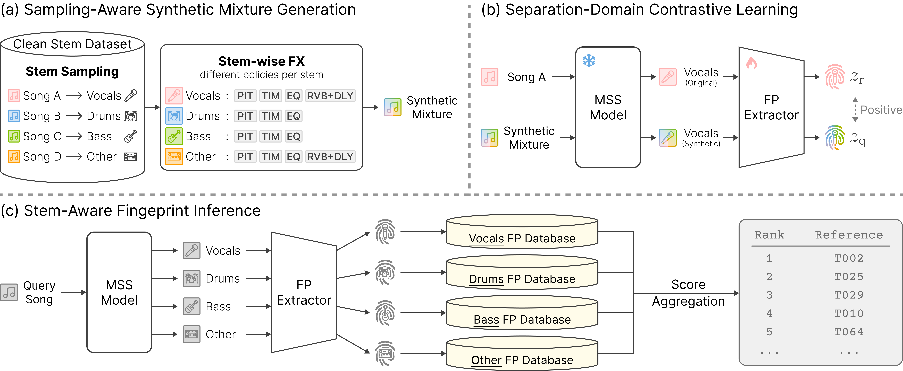

Review-stage demo
StemPrint Demo
"StemPrint: Stem-Aware Audio Fingerprinting for Automatic Sample Identification"

Overview
This demo page presents qualitative retrieval cases for StemPrint. StemPrint separates music into source stems and compares stem-level fingerprints to improve track-level sample retrieval. Each case shows ranking and summary figures side by side, followed by audio segments selected from the highest-scoring query-reference segment pair between the query and each model's top-1 reference track.
References
[1] Baseline (M1): A. Bhattacharjee, I. M. Higgs, M. Sandler, and E. Benetos, "Refining music sample identification with a self-supervised graph neural network," Proceedings of the 26th International Society for Music Information Retrieval Conference, pp. 511-517, 2025.